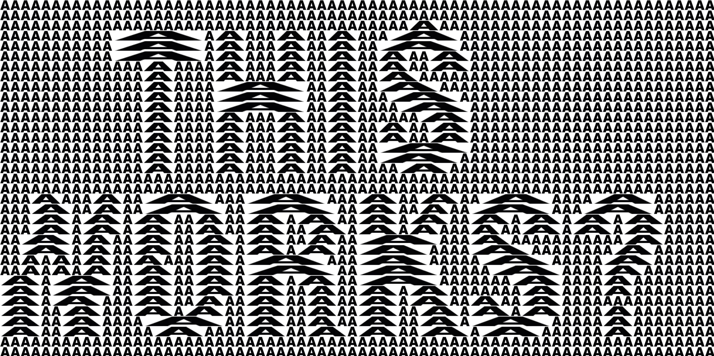
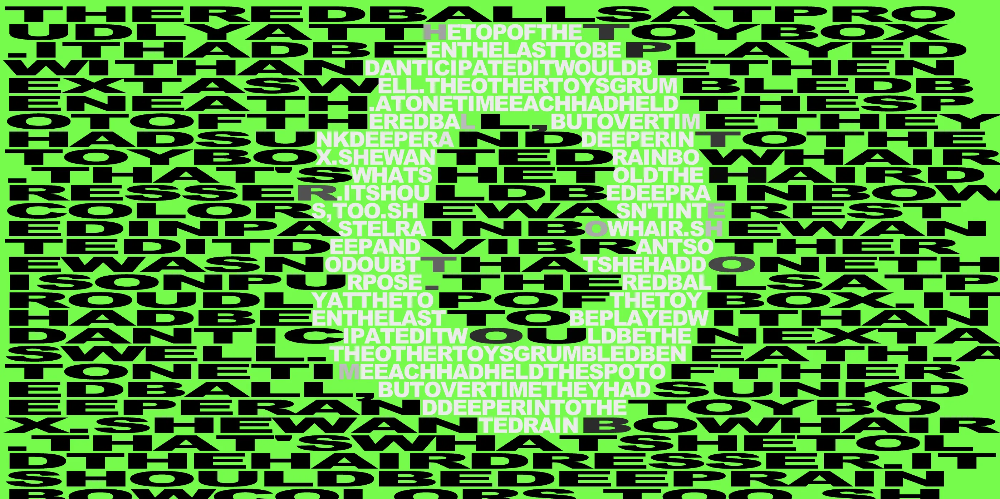
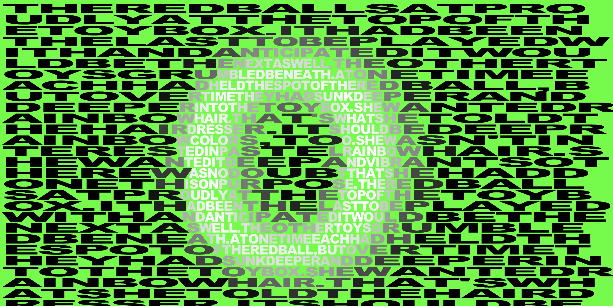

Typer
AVOIDANCE

“THIS WORKS?”

“O” (Solid) Grayscale
(Resolution doesn't display well in Safari)
Use Command + to zoom in, and refresh the page to view it in high resolution.

“O” (Blurred) Grayscale
(Resolution doesn't display well in Safari)
Use Command + to zoom in, and refresh the page to view it in high resolution.
“O” (Blurred) Black
(Resolution doesn't display well in Safari)
Use Command + to zoom in, and refresh the page to view it in high resolution.
Livestream
(Resolution doesn't display well in Safari)
Use Command + to zoom in, and refresh the page to view it in high resolution.